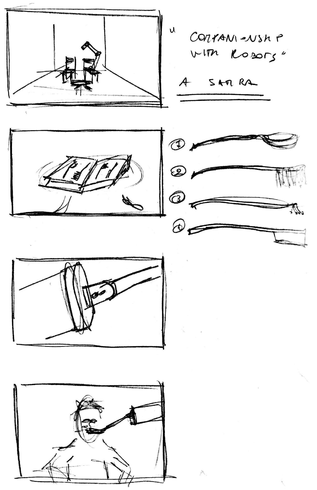

Summary of the week
This week I tried to get going by making a video mockup of the idea I have in mind. It helped me realise a few things, that conclude in a rough scenario sketching.
Human-robot performance
"I imagine a person sitting on an armchair, a robotic arm popping in from behind and doing something" Ruairi said, setting the pace for the further exploration. It is now clear that the focus should be on the performative and interactive aspects of the robotic arm. Charlie Chaplin Modern Times depicted 80 years ago a silly feeding machine. It is so fun to watch because of his great acting, I would say. What a robotic arm could do better that Chaplin's machine is that it has a body, one could say, and that body can be very expressive.
How could Chaplin's piece be re-interpreted in "contemporary times" as a critique towards the use and abuse of machinese and ubiquitous computing in everyday lives? The video below shows a prototype of a robotic arm mounting an end-effector which can rotate and switch in between 3 different tools. Very basic interactions as eating, drinking and wiping the mouth are on show. The behaviour of the robot triggers different reactions in the actor.
Inputs from Yuri and Jess
. interesting
project conducted at RCA ten years ago. The designer put together an echology of tools;
. the prototype showed in the video above is totally missing design decisions. How does the spoon attaches to the robotic arm? What if there is a very long extension and what if instead it is very short? Which kind of effect would these design choices have on the behaviour of the robot? Drawing below by Jessica In.
Design proposal
Designing a set of mechanical extensions for a robot arm that relate to the "human care" scenarios such as:
. feeding;
. personal hygene;
. stress release;
Storyboard draft
Message: Companionship with robots in a surreal, human-centered vision, such as in the work of Vilas-Boas. The scenario should be gloomy, very clean, quiet. A person sits next to the robot and starts to "use" his companionship to brush his hairs, tickle his skin, bring some water. Basically a fictional piece where the robot is totally enslaved and serves human particular or basic needs.
